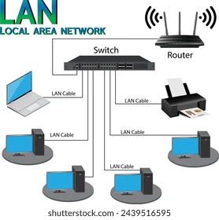
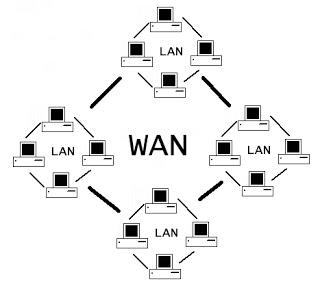
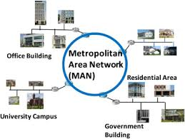
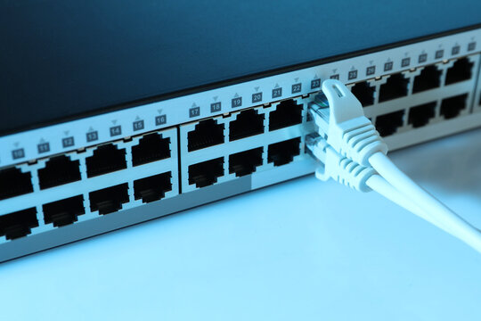
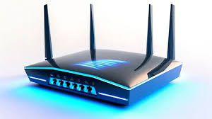
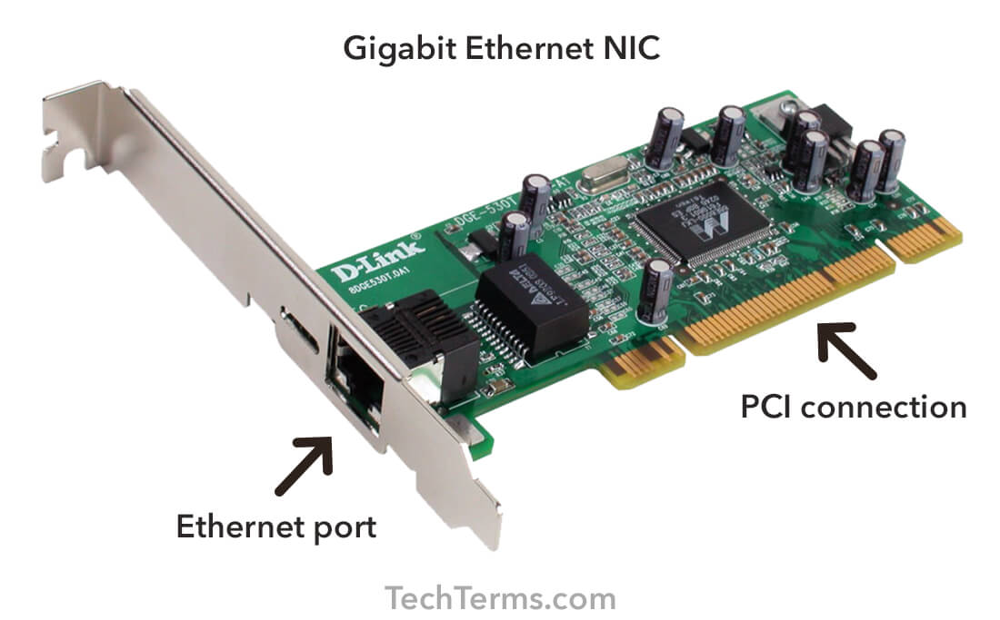

-
Academy of BlackHat
Computer Networking :
Understanding the Networking Basics :
What is a network?
In the simplest terms, a network is a group of two or more computers (or devices) that are linked together. They can share resources, exchange files, or allow electronic communications. The computers on a network can be linked through cables, telephone lines, radio waves, satellites, or infrared light beams.
Full Networking Notes can download below.....Types of Networks:
Networks can be categorized into various types based on their size, scope, and purpose. Here are the three most common types:
1. Local Area Network (LAN): A LAN is a network that connects computers within a limited area like a home, school, or office building.
2. Wide Area Network (WAN): A WAN is a network that spans a large geographical area, such as a city, state, or even a country.
3. Metropolitan Area Network (MAN): A MAN typically covers an area the size of a city or town.
  
Hardware Components of a Network :
Networks are not just about computers. They also include other hardware components that facilitate the communication process:
1. Routers: Devices that forward data packets between computer networks. Think of them as the 'post office' of the network, directing traffic to ensure it gets where it's supposed to go.
2. Switches: These are like the 'traffic cops' for your network. They connect multiple devices on a LAN and direct the flow of data to the correct destination.
3. Network Interface Cards (NICs): These are hardware components installed in computers that enable them to connect to a network.
  
Software Components of a Network :
Software components play an equally crucial role in networks. They include
Operating Systems :Systems like Windows, MacOS, or Linux have built-in networking capabilities.
Network Drivers: These are software programs that control the network hardware and provide an interface for the operating system to interact with it.
These are sets of rules that govern how data is transferred on a network.
The Basics: How Computer Networks Work
Ever sent an email or streamed a movie and wondered how all of that information travels so quickly across your screen? It's kind of like magic, isn't it? Well, today we're going to pull back the curtain on that magic show and reveal what's going on behind the scenes. Welcome to the magnificent world of computer networking!
I know what you're thinking - "Computer networking? Isn't that super technical and complex?" Well, yes, and no. While it's true that networking can dive pretty deep, it's also something we can break down into bite-sized pieces.
Get ready as we unravel the journey of a simple email or a cute cat video from one device to another. Let's dive into the basics of how computer networks work. Trust me, by the end of this, you'll start seeing your daily memes and emails in a whole new light!
The Magic of Communication
Think of the last time you sent an email. You typed a message, hit send, and within seconds, your message was in your friend's inbox, possibly thousands of miles away. But have you ever wondered what really happens behind the scenes? Let's take a closer look.
When you hit send, your simple email message is broken down into smaller, more manageable pieces called packets. These packets travel through a series of networks (including your local network and the internet), guided along by network protocols, until they reach their destination. Then, these packets are reassembled back into your original message.
Data Packets and Their Journey
Here's where the true magic happens. A data packet is a tiny piece of your email message, each containing a chunk of your message, the sender's address, the receiver's address, and information about how to reassemble the packets back into the original message.
The journey of a data packet from one device to another is quite fascinating, as it doesn't necessarily follow a straight line. Instead, it can travel across multiple paths to get to its destination, jumping from one device (like routers or switches) to another.
Protocols – The Traffic Rules of Networking
Just like we need rules to guide traffic on roads, networks need protocols. Protocols define the "rules of the road" for networks by specifying how data should be sent, received, and interpreted.
There are many types of network protocols, but let's discuss three of the most common:
1. Transmission Control Protocol (TCP): TCP is like a trusted courier, ensuring that data packets arrive at their intended destination without error and in the correct order.
2. Internet Protocol (IP): IP is the guiding star. It helps packets find their way around the network, assigning addresses to each packet.
3. Hypertext Transfer Protocol (HTTP): You've probably seen this one in your web browser's address bar. HTTP is used for transferring web pages and other resources on the web.
Network Devices – The Unsung Heroes
Network devices play a critical role in sending, directing, and receiving data on a network. Let's meet some of them:
1. Routers: These devices connect different networks together. They analyze data packets and send them on the best route to their destination.
2. Switches: Switches connect various devices on the same network. They use the addresses in data packets to send them to the right device.
3. Modems: These are the gateways between your home network and the internet. They convert the digital data from your network into a format that can be transmitted over your internet connection.
That's a Wrap!
Whew! I hope that didn't feel like drinking from a firehose. Understanding the basics of how computer networks work is essential to the world of cybersecurity. With this foundation, we'll start exploring deeper topics in the next section, like network types and topologies. Trust me, it's going to be an exciting journey! Stick around, and let's decode the mysteries of networking together.
Networking Key Terminology
Getting comfy with key networking terms is a bit like learning a new language. But instead of ordering a cup of coffee or asking for directions to the nearest library, you're navigating the fascinating world of computer networks. And guess what? I'm here to be your networking language tutor.
Remember that time when you sent an email and it got delivered to the other side of the world in an instant, or when you streamed your favorite movie in HD without any hiccups? That's all thanks to networks functioning behind the scenes, each part speaking this 'networking language'.
As we explore this new language together, don't worry if you stumble upon a term you don't understand. It's totally normal. I'll make sure to break things down and explain them in a way that makes sense. And before you know it, you'll be tossing around networking terms like a pro.
Network Nodes
When you hear the term 'node' in the context of networking, you might wonder if we're talking about a point in a mathematical diagram or a part of a tree branch. As fascinating as those topics could be, in our world of computer networking, nodes have a different meaning altogether.
What are Network Nodes?
Simply put, a network node is any device that can connect to a network and is capable of sending, receiving, or forwarding information over that network. This is the broad definition, and it encapsulates a range of devices you're probably already familiar with and some that might be new to you.
Types of Network Nodes
Let's get to know some of the members of the network node family:
1. Computers: This one's easy! Your laptop, your office workstation, or the massive servers in data centers - all these are nodes.
2. Networking Hardware: This includes devices like routers and switches, which help direct traffic across networks.
3. Peripheral Devices: Printers, fax machines, scanners, or any other devices connected to the network also qualify as nodes.
4. Network-Connected 'Smart' Devices: In our increasingly interconnected world, everyday objects like televisions, refrigerators, and even light bulbs, when connected to a network, are nodes.
5. Mobile Devices: Your smartphones and tablets are nodes too!
Why are Network Nodes Important?
Think of network nodes as the 'citizens' of a network 'city'. Just as a city can't exist without its citizens, a network can't function without nodes. They're the points where messages are created (sending a file), received (downloading a webpage), or passed along (routing data to its destination).
To further illustrate this, imagine you're sending an email to a friend. Your laptop (node 1) sends the email as a data packet to your router (node 2), which sends it over the internet through a series of other routers and switches (more nodes). Finally, it reaches your friend's laptop (the final node), and they can read your email. Without these nodes, there's no network, and without a network, that email is not reaching your friend.
Internet Service Provider (ISP)
Ah, the ISP, or Internet Service Provider. This is a term you've probably come across every time you've paid your internet bill. And while we're all aware that they provide us with the internet, let's get a bit more familiar with what ISPs do and why they're so important in our networked world.
So, What Exactly is an ISP?
An ISP is a company that provides services for accessing, using, or participating in the Internet. Essentially, they're our gateway to the world wide web and all it has to offer.
The Role of an ISP ISPs serve a crucial role in the way we connect to the internet by providing us with two essential services:
1. Internet Access: ISPs connect us to the global network of networks, known as the Internet. They do this by providing a range of connection options to cater to different user needs, like DSL for residential use, or Fiber optics for businesses requiring higher speeds.
2. Internet Services: Beyond just providing access, ISPs also offer a slew of services such as email accounts, web hosting, and cloud storage.
Different Types of ISPs
There are several types of ISPs, categorized based on how they deliver internet services to their customers:
1. Dial-Up ISPs: These are the pioneers, providing internet services through telephone lines. They're slow by today's standards, but hey, we all start somewhere!
2. DSL and Cable ISPs: These are the most common types of ISPs for residential customers. They provide internet services through telephone lines (DSL) and cable networks (Cable).
3. Fiber Optic ISPs: These are the superstars, offering extremely high-speed internet connections via Fiber Optic cables.
4. Satellite ISPs: These guys make the internet available in remote areas by beaming it from space. The speeds aren't the greatest, but it's better than nothing, right?
5. Wireless ISPs: These are becoming more common and provide internet services wirelessly. They're often found in urban areas where they can offer an alternative to DSL or Cable.
Server
Having covered what a client is, it's time to talk about the other half of the client-server relationship: the server.
A server is a computer or system that manages network resources and services. It's like the heart of a network, pumping out the data and services that clients need to function.
A server provides services to clients. These services can be anything from serving a web page, storing files, to handling email, and much more.
Here's an easy analogy. Picture a busy restaurant. The servers (waitstaff) cater to the needs of the diners (clients). The diners request services (like ordering food), and the servers fulfill those requests. In this analogy, the kitchen is like the server's hardware and software, preparing and dishing out what the clients need.
Types of Servers
Just as a restaurant can have servers specializing in different tasks (bartenders, dessert servers, etc.), we have various types of servers in networking some of them are :
1. Web Server: This server stores and delivers web pages in response to client requests. When you type a URL into your web browser (a client), you're asking the web server to send you a copy of the web page you want to visit.
2. File Server: This type of server provides a central location for storing and accessing files. Many businesses use file servers so their employees can share resources and collaborate.
3. Database Server: This server provides database services and responds to queries from client machines. It's like a librarian who knows exactly where every book (piece of data) is stored.
4. Email Server: This server manages and transfers electronic mail messages. If you're using a service like Gmail or Outlook, you're interacting with an email server. 5. Game Server: For the gamers out there, this one's for you. A game server is a server that runs the games we play online, managing game worlds and transmitting data about players' actions.
IP Address
An IP address is a unique identifier for devices on a network. It's like your home address but for your computer or any device connected to the internet. Your IP address allows other devices to find you and send information your way.
How IP Addresses Work
Let's continue with the home address analogy to explain how IP addresses work. When someone sends you a letter, they write your home address on the envelope, which guides the postman to deliver it to your house. Similarly, when you send information over the internet (like when you click on a link to visit a website), your computer sends out the request with the IP address of your device and the IP address of the server that holds the website. This allows the data to know where to go and where to return the response.
Types of IP Addresses
There are two types of IP addresses you need to know about:
1. IPv4: This is the most common type of IP address. It's a set of four numbers separated by periods, with each number ranging from 0 to 255. An example of an IPv4 address is "192.168.1.1".
2. IPv6: With more devices than ever connecting to the internet, we're running out of IPv4 addresses, hence the need for IPv6. These addresses are longer and allow for many more unique addresses. An example of an IPv6 address is "2001:0db8:85a3:0000:0000:8a2e:0370:7334".
Dynamic vs Static IP Addresses
IP addresses can be dynamic or static:
1. Dynamic IP addresses change every time your computer connects to the internet.
2. Static IP addresses remain the same. They're like a permanent home address for your device. Most devices use dynamic IP addresses because static IP addresses can pose security risks and are more expensive.
Port
While talking about networks, you've probably heard the term 'port'. It might seem a bit maritime, but in networking, ports have a whole different meaning. Let's dive in and get a better understanding of what a port is.
Defining a Port
In computer networking, a port is an endpoint of communication in an operating system. While an IP address is used to identify the host in a network, a port number identifies a specific process or service running on that host.
Common Ports and Their Uses
There are lots and lots of port numbers - 65,536 to be exact. Here are a few well-known ones:
1. Port 80: This port is typically used for HTTP (HyperText Transfer Protocol), the protocol for transferring web pages and web content.
2. Port 443: This port is commonly used for HTTPS (HTTP Secure), which is used for secure web browser communication.
3. Port 25: This port is used for SMTP (Simple Mail Transfer Protocol), which is used for email routing.
4. Port 22: This one is for SSH (Secure Shell), used for secure logins, file transfers, and command execution.
Firewall
Alright, now that we've discussed IP addresses and ports, it's time to talk about a key player in network security: the firewall.
A firewall is a network security system that monitors and controls incoming and outgoing network traffic based on predetermined security rules. It forms a barrier between a trusted network (like your home or work network) and an untrusted one (like the internet).
How Firewalls Work
Imagine a firewall as a bouncer at the door of a club. The bouncer (firewall) checks everyone's ID (data packets) before they enter the club (your network). If they're on the guest list (approved by the firewall's rules), they can enter. If not, they're turned away. Firewalls inspect data packets (small chunks of data bundled for transmission) coming into and going out of a network. They check these packets against rules you set up to determine whether they should be allowed through or not.
Types of Firewalls
Firewalls come in different types, including:
1. Packet-Filtering Firewalls: The most basic type. They check data packets against a set of filters, like checking for correct addresses and ports.
2. Stateful Inspection Firewalls: These are a step up from packet-filtering firewalls. They not only inspect each packet but also keep track of ongoing connections and can block packets that deviate from the expected sequence.
3. Proxy Firewalls: These firewalls act as middlemen. They accept all traffic requests coming into the network by posing as the true recipient of the traffic. After inspecting the traffic, they pass along the legitimate traffic requests to the actual intended servers.
4. Next-Generation Firewalls (NGFWs): These are more sophisticated firewalls that combine traditional firewall technology with additional functionalities, like encrypted traffic inspection, intrusion prevention systems, and more.
VPN (Virtual Private Network)
From firewalls, we'll now move on to another key concept in the world of networking: VPN, or Virtual Private Network.
A VPN is a technology that creates a safe and encrypted connection over a less secure network, like the internet. Essentially, it provides you with a private tunnel through the wild jungle of the internet.
How VPNs Work
Let's imagine you're at a coffee shop using their public Wi-Fi. This network is not very secure - it's like a clear glass tunnel where any passerby could potentially see what you're sending or receiving. When you use a VPN, it's like you're installing a one-way mirror along that tunnel. Now, even though you're on the same network as others, no one can see inside your specific 'tunnel' of internet traffic.
VPNs work by routing your connection through a server located elsewhere, and by encrypting your data. The server could be in a different city or even a different country. After your data reaches the VPN server, it's decrypted and sent on to its destination. This has the effect of masking your online actions and making it look like the data is coming from the VPN server, not from your device.
Why Use a VPN?
There are several reasons you might want to use a VPN: 1. Security: VPNs encrypt your data, making it much more secure than a typical internet connection. This is particularly useful when you're using public Wi-Fi networks.
2. Privacy: Because your data appears to come from the VPN server, your own IP address is effectively hidden, protecting your identity online.
3. Circumventing Geoblocks: Some online content is restricted based on your geographic location. A VPN can make it seem like you're connecting from a different location, allowing you to access this content.